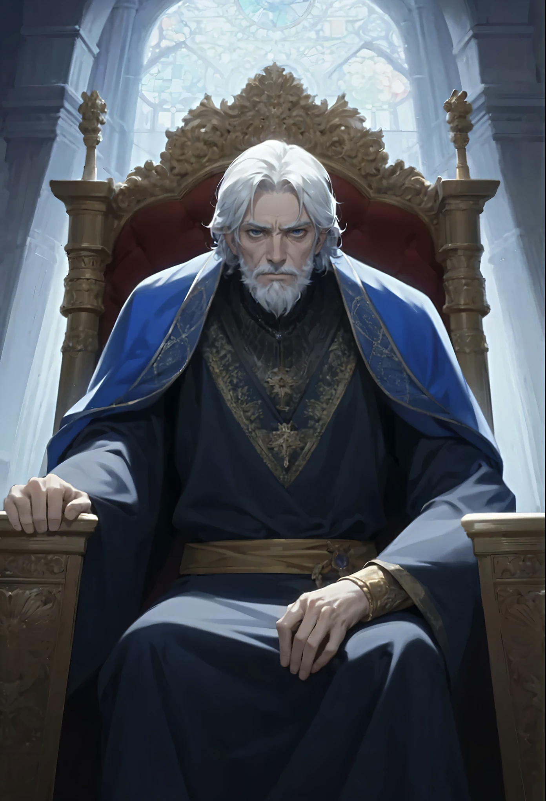

King Vince
"They call you destined, and crowned for greatness—then when you rise to claim it, the world offers nothing but air. Tell me, do you know such futility?"
...
A king on borrowed time, Vince has refused to step down. Striving, yet never quite reaching. Always within sight, never within grasp. He cannot make sense of the world around him, or perhaps the terror of it all holds him back. Something yet feels amiss.
Something yet feels amiss. Surely Darius could benefit from some additional guidance? That must be it. Vince simply wants to see his legacy passed down—To see his son become the perfected testimony of his reign. Heavens forbid all has been for naught.